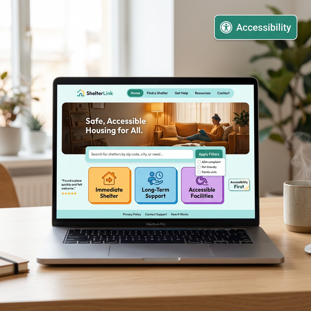

Essential Website Features for Human Trafficking Nonprofits

The Digital Front Door
For organizations operating in the anti-trafficking space, a website is rarely just a digital brochure. More often than not, it is the initial point of contact for a survivor seeking extraction, a community member looking for resources, or a major donor validating your impact. In this high-stakes environment, broken links, insecure forms, and confusing navigation are not simply annoyances—they are genuine liabilities.
At SafeHaven Digital Studio, we evaluate nonprofit websites primarily through a lens of safety and accessibility. Here are the non-negotiable features every human trafficking nonprofit should implement.
1. The "Quick Exit" or Safety Button
Survivors attempting to access resources are often monitored via compromised devices, shared family computers, or closely guarded smartphones. If an abuser enters the room, the survivor must be able to leave the site instantaneously.
A "Quick Exit" button is a sticky element (usually a highly visible red or contrast-colored tab anchored to the screen edge) that immediately redirects the tab to a generic site like Google or a local weather page when clicked. More sophisticated versions attempt to replace the browser history entry so the back button does not reveal the shelter's website.
2. Secure, Encrypted Contact Forms
Using a default WordPress form plugin that emails plain-text data directly to your staff's inbox is a massive security oversight. Ingesting sensitive geographic data or abuse histories requires a secure pipeline.
Your contact forms must utilize SSL encryption (HTTPS everywhere) and ideally submit data directly to an encrypted, role-based backend rather than blasting PII (Personally Identifiable Information) across unencrypted email protocols. We strongly advise abstracting names and locations from narrative text boxes wherever possible.
3. Clear, Accessible Help Information
When someone lands in crisis, they do not have the cognitive bandwidth to read a three-paragraph mission statement. Your phone number, text hotline (if applicable), and operational hours must be the absolute first things they see.
Use highly contrasting typography and large font sizes. In corporate design, subtlety is praised; in emergency response design, absolute clarity is mandatory.
4. Multilingual Support Architecture
Human trafficking disproportionately affects immigrant and transient populations who may not speak English as their primary language. While automated tools like Google Translate are acceptable as a fallback, critical safety protocols, intake requirements, and location data should be translated accurately by human beings and hardcoded into the layout using native HTML tags.
Conclusion: Function over Flash
While dynamic animations and complex layouts look appealing to funders, your core demographic needs your site to be fast, secure, and clear. If your current website is lacking these essential safety features, it is time for a digital overhaul. Do not wait for a security emergency to dictate your technical strategy.
Is your organization's website secure?
We provide pro-bono security audits and web builds for qualifying frontline shelters and anti-trafficking coalitions.
Apply for Free Technical Support